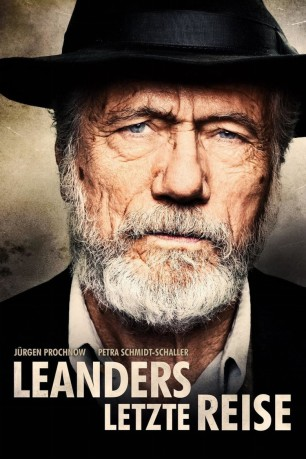

#10230 Leanders letzte Reise
 
 IMDB-Wertung: 6.8 / 10
IMDB-Wertung: 6.8 / 10  Metascore: 0
Metascore: 0 
Eine letzte Reise will der 92-jährige Eduard Leander noch unternehmen, dessen Frau soeben gestorben ist: Alleine macht er sich auf den Weg nach Kiew, wo der ehemalige Wehrmachtsoffizier während des Zweiten Weltkriegs seine große Liebe zurücklassen musste. Eduards Tochter Uli beauftragt ihre eigene Tochter Adele damit, den störrischen alten Mann von seinem Vorhaben abzubringen, obwohl diese kein wesentlich besseres Verhältnis zu Eduard hat. Wie zu erwarten scheitert Adele mit ihrem Vorhaben und findet sich plötzlich mit ihrem Großvater im Zug Richtung Ukraine wieder, wo gerade der Krim-Krieg mit Nachbarland Russland ausgebrochen ist. Doch obwohl die Voraussetzungen alles andere als ideal sind, stellt sich die Reise als überraschend angenehm heraus, denn die Beziehung zwischen Eduard und seiner Enkelin verbessert sich langsam…
Jahr: 2017
Dauer: 102 Minuten
FSK: 6
Land: Deutschland Studio: TOBIS FilmTonspuren:
Untertitel:
Auflösung: 1080p (1920x808) Größe: 3788 MB
Genre: Drama, Krieg, Liebe
Regisseur: Nick Baker-Monteys
Drehbuch: Nick Baker-Monteys, Alexandra Umminger
Soundtrack: Christoph Berg
Darsteller:
 Jürgen Prochnow als Eduard Leander
Jürgen Prochnow als Eduard Leander Petra Schmidt-Schaller als Adele
Petra Schmidt-Schaller als Adele- Tambet Tuisk als Lew
- Artjom Gilz als Boris
 Kai Ivo Baulitz als Hermann Bergmann
Kai Ivo Baulitz als Hermann Bergmann Andreas Patton als Marcus
Andreas Patton als Marcus- Nina Antonova als Ustinja
- Mariya Kochur als Nastja
- Oleg Karpenko als Flag man
- Björn von der Wellen als Man in Bar (uncredited)
- Suzanne von Borsody als Uli
- Kathrin Angerer als Eva Bergmann
- Yevgeni Sitokhin als Nikolai
- Natalia Bobyleva als Masha
- Jurij Rosstalnyj als Juri
- Valentina Sova als Judmilla
- Georgij Povolockij als Sergej
- Emma Drogunova als Young Ukrain Woman in Train
- Robert Mika als Michael, Man in Train
- Irina Platon als Train Conductor
Datei: X:\2017(G-M)\Leanders letzte Reise (2017, FSK6, 1920x808).mkv seit 25.12.2018
Festplatte: HD 2017(A-Z)-2018(A-F)
 Es gibt insgesamt 148 Filme in der Gruppe '2017(G-M)'
Es gibt insgesamt 148 Filme in der Gruppe '2017(G-M)'